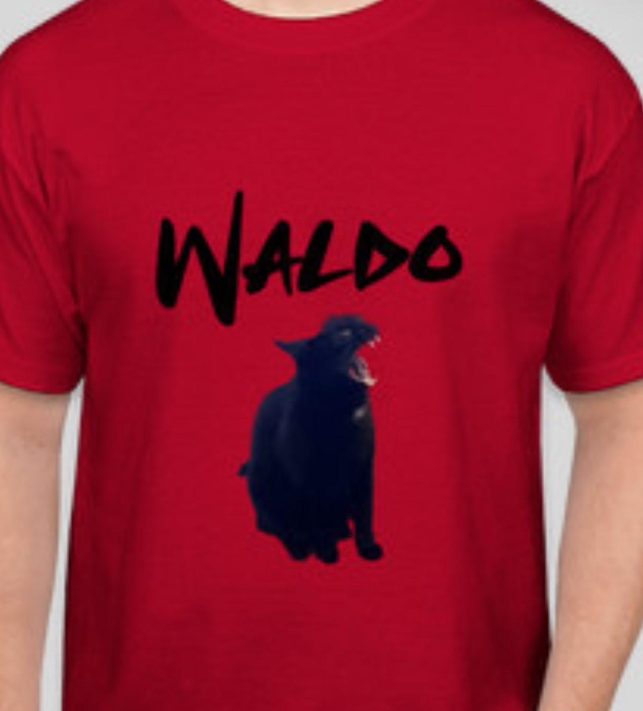
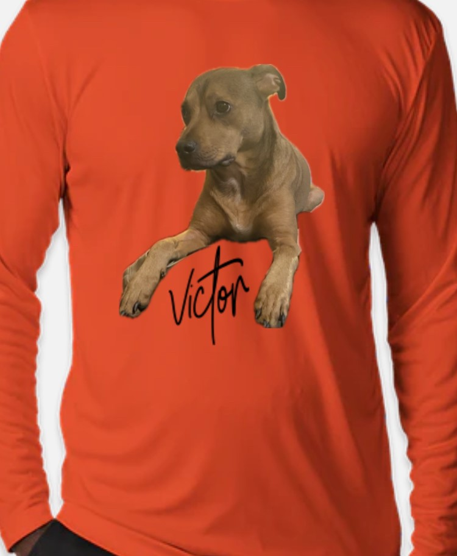
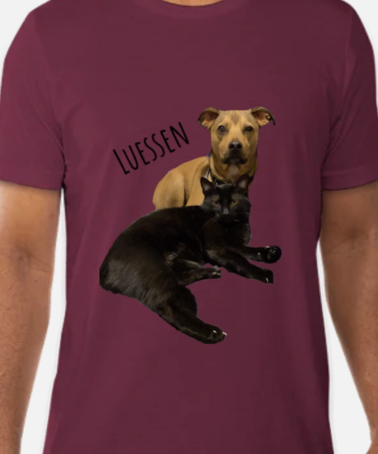

Luessen Fundraising
The Luessen pets are dedicated to helping their fellow canines and felines. Soon they will be selling each t-shirt for $25 to raise money for animals across Minnesota. Fundraising will take place just one day, November 31st, 2023. No matter whose team you want to support, you will be helping homeless animals of Minnesota.
Team Waldo
Waldo is a black cat with blind ambition. He aspires to be the singer in his own band. Like any heavy metal loving cat, he loves catnip, lasers, and moshing. Support other awesome cats by choosing Team Waldo.
Proceeds from sales for Team Waldo t-shirts will be donated to Consignment Cats safe shelter of Minnesota. Text Team Waldo to 000-333 on November 23, 2023 to place your order.
Team Victor
Victor is a brown dog with a bright future. You will help other sweet dogs like Victor when you choose Team Victor.
Proceeds from sales for Team Victor t-shirts will be donated to Secondhand Hounds safe shelter of Minnesota. Text Team Victor to 000-555 on November 23, 2023 to place your order.
Team Luessen
While both are fiercely independent, Victor and Waldo are a united front that is Team Luessen. Support their mission with your purchase of some of their merch.
Proceeds from sales for Team Luessen t-shirts will be donated to Animal Ark of Minnesota . Text Team Luessen to 000-888 on November 23, 2023 to place your order.